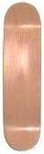

<table>
  <tr>
    <td rowspan="2"></td>
    <td style="font-weight:bold; background-color:#CCCCCC">Skateboard Deck</td>
  </tr>
  <tr>
    <td>The deck is the most essential part of the skateboard, and is typically
      constructed out of seven layers of hard maple. These layers are glued and
      pressed in a form, and then cut and finished to the desired shape.
    </td>
  </tr>
</table>
